|
2008 Open Show Judge Judge
Mrs Marje Burt (Abbeysett) |
|
14. MINOR PUPPY BITCH (1)
1st Mrs J.J. Young & Mrs C.J. Tucker - Walshaw
Chrismas Rose for Ownways
|
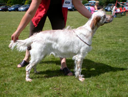 |
|
15. PUPPY BITCH (3.1)
1st Mrs L & Mr R. Stanton - Sorbus Three Wishes.
2nd Mrs A. Morgan, Mr R,. Bott & Mr L. Petherick -
Quensha Little Jeanie |
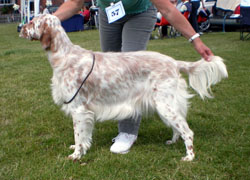 |
|
16. SPECIAL VETERAN BITCH 7 TO 9 YRS (2.1)
1st Mrs J.J. Young Ownways Touch of Glory JW.
2nd Mr P & Mrs J Dunks. Samelen Star Shine JW |
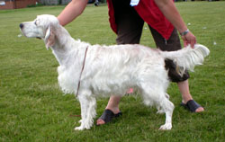 |
|
17. SPECIAL VETERAN BITCH 10 & OVER (1.1) |
|
|
18. JUNIOR BITCH (3)
1st Mrs J Dennis & Mrs J Field - Mariglen
Francesca Fenston.
2nd Mr T & Mrs L.A. Cooper - Settrenda Golden Promise.
3rd Mrs B.A. Mumford - Kierembell Orange Blossom |
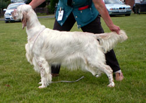 |
|
19. YEARLING BITCH (5)
1st Mr & Mrs A Grimsdell - Tattersett Double Florin.
2nd Mrs J Day - Decovely Mamma Mia.
3rd Mrs M.E. Richards - Decoverly Sweet Caroline with Rubuscott.
RES Mrs V Cozens - Larrenie Bonnie Lass for Earldoms .
VHC Mr & Mrs D.Hewett - Tattersett Double Action |
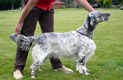 |
|
20. MAIDEN BITCH (2)
1st Mrs A. Morgan, Mr R,. Bott & Mr L. Petherick -
Quensha Little Jeanie.
2nd Mrs B.A. Mumford - Kierembell Orange Blossom
|
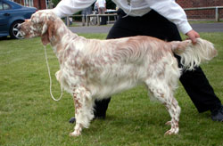 |
|
21. NOVICE BITCH (2)
1st Mrs A. Morgan, Mr R,. Bott & Mr L. Petherick -
Quensha Little Jeanie.
2nd Mrs B.A. Mumford - Kierembell Orange Blossom |
as above |
|
22. GRADUATE BITCH (5.1)
1st Mr & Mrs A Grimsdell - Tattersett Double Florin.
2nd Mrs S & Mr D Oliver.- Wansleydale Cloudberry
at Bramstorm. JW.
3rd Mrs Y Davis - Culverwell Calypso of Merleycopse.
RES Mrs A Bartholomew - Swannery Tear Drop for Bartholeys |
|
|
23 POST GRADUATE BITCH (4.3)
1st Mrs F & Miss F Tompsett - Radbrooks Wild Honey |
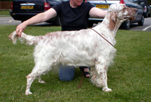 |
|
24 LIMIT BITCH (5.)
1st Mr & Mrs A Grimsdell - Tattersett Air of Elegance.
2nd Mrs F & Miss F Tompsett - Richecca Party
Colours for Radbrooks.
3rd Mrs A Bartholomew - Tattersett Mystic Dream
at Bartholeys.
RES Mr J.J. Young - Ownways Touch the Money.
VHC Mrs J Day - Mandysett Ready Steady Go to Decoverly |
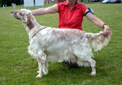 |
|
25 OPEN BITCH (5.1)
1st Mrs S & Mr D Oliver - Wansleydale Songbird at Bramstorm.
2nd Mr P & Mrs J Dunks - Samelen Star Bright.
3rd Mr & Mrs D Hewitt - Tattersett Demure.
RES Mrs Y Davis - Merleycopse Love of a Lady
|
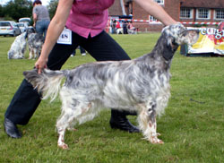 |
|
26. SPECIAL BEGINNERS BITCH (4.3)
1st Mrs Y Davis - Culverwell Calypso of Merleycopse |
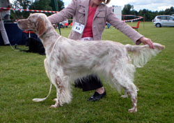 |
|
Best Bitch Mrs J Dennis & Mrs J Field -
Mariglen Francesca Fenston
RES Best Bitch Oliver- Oliver - Wansleydale
Songbird at Bramstorm.
Best Puppy Bitch Mrs J.J. Young & Mrs C.J.
Tucker - Walshaw Chrismas Rose for Ownways
Best Veteran Bitch Mrs J.J. Young Ownways Touch of
Glory JW
BEST IN SHOW : Mrs J Dennis & Mrs J Field -
Mariglen Francesca Fenston
RES BEST IN SHOW & BEST OPP SEX: Mr & Mrs A
Grimsdell - Tattersett Final Edition
BEST PUPPY IN SHOW: Mrs J.J. Young & Mrs C.J.
Tucker - Walshaw Chrismas Rose for Ownways
BEST VETERAN IN SHOW :Mr P. & Mrs J Dunks - Sh
Ch Samelen Shooting Star |
|
27 Brace (1)
Mrs A Morgan. Mr R. Bott & Mr L. Petherick's Brace |
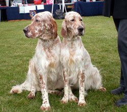 |